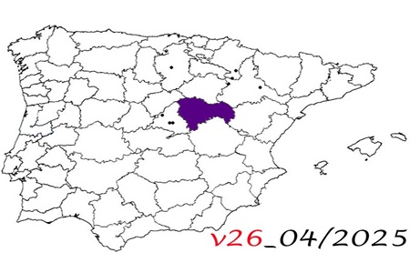

26. Trip through the province of Guadalajara.
26. Trip through the province of Guadalajara.
August 2024 to april 2026
En este viaje recorrí
© 2016 - All Rights Reserved - Diseñada por Sergio López Martínez
![[Valid RSS]](https://www.onepointsync.com/wp-content/uploads/2016/08/valid-rss-rogers.png "Validate my RSS feed")